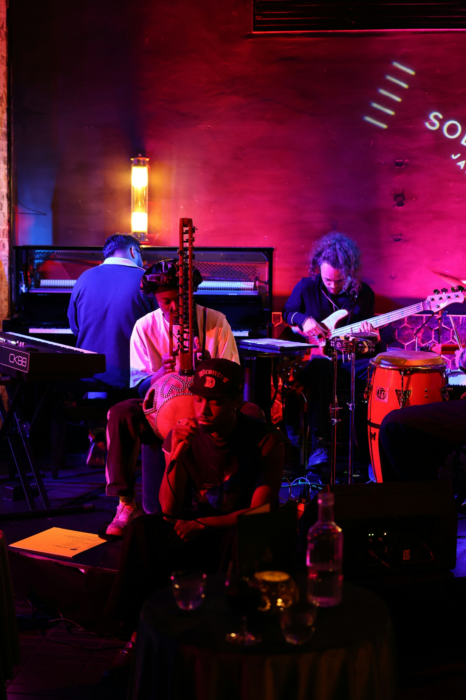

21НОЯ / СБ
MODERN JAZZ · 20:30
НА ЭТОЙ НЕДЕЛЕ НА СЦЕНЕ
КВАРТЕТ · СОВРЕМЕННЫЙ ДЖАЗ · ДВА СЕТА
Фортепиано, контрабас, саксофон и барабаны. Столики начинаются в двух шагах от сцены; двери открыты с 19:00.

02 / БЛИЖАЙШИЕ ВЕЧЕРА
Каждый концерт — в камерном зале на 46 мест. Двери открываются за час до начала.
MODERN JAZZ · 20:30
VOCAL JAZZ · 21:00
SOUL & GROOVE · 21:00
Составы выступлений и время начала могут меняться.

“Первый ряд — в двух метрах от музыкантов. Между сетами слышно, как звенит лёд в стакане.— Команда Nocturne
04 / НАШЕ МЕСТО
В центре Москвы есть комната с приглушённым светом и сценой на расстоянии вытянутой руки. Здесь нет случайного фонового шума: только музыканты, напитки и разговоры после последнего сета.
05 / ВАШ ВЕЧЕР
Оставьте детали вечера. Заявка сохранится в этом браузере; её можно добавить в календарь или удалить.